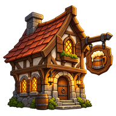
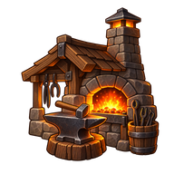
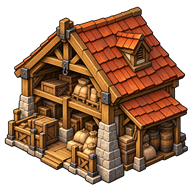

Règles et fonctionnement
Améliorations des lieux
Choisir des bâtiments selon les services, la production et les places disponibles.
Comprendre ce que cela implique
Un bâtiment présent applique son effet même si le lieu a changé de type, mais cela ne rend pas toutes les constructions possibles partout. Les restrictions de construction et les effets des bâtiments sont deux règles distinctes.
Le bonus du niveau actuel remplace celui du niveau précédent : une ferme améliorée ne cumule pas tous ses anciens paliers. Les emplacements réservés aux bâtiments requis évitent qu’un développement facultatif empêche l’évolution du camp.
Les conversations de taverne et les autres dialogues partagent un panneau défilant : une longue liste de réponses n’oblige pas à masquer des options. La fermeture reste accessible en dehors de cette zone ; les choix et leurs effets sont toujours validés par le serveur.




Dans cet article
Détails de référence
Texte de référence mis en forme et conservé dans l’historique de cet article. Les paragraphes datés peuvent décrire une évolution ou une étape antérieure.
Icônes des bâtiments — 25 octobre 2026
Les 27 bâtiments et installations du catalogue disposent d’une icône PNG : les 21 visuels manquants remplacent les émojis dans les fiches et les résumés des lieux. Les six illustrations existantes sont conservées. Les nouveaux bâtiments sont représentés en vue de trois quarts sur fond transparent et leurs images sont incluses dans le préchargement. Ce changement concerne uniquement la présentation : les coûts, niveaux, services et effets restent calculés et validés par le serveur.
Les effets d’une infrastructure présente sont appliqués quel que soit le type du lieu. Les restrictions de construction existantes restent en place : le camp construit ses installations temporaires, puis débloque les bâtiments permanents en évoluant. Les bonus du niveau courant remplacent ceux des niveaux précédents.
La capitale royale commence les nouvelles parties avec toutes les améliorations au niveau maximal. Les maisons remplacent les tentes et habitations, et les murailles remplacent les enceintes précédentes. Les sauvegardes existantes conservent leurs bâtiments et leurs destructions.
Effets et descriptions
Les bâtiments requis pour les évolutions du camp disposent chacun d’un emplacement réservé : Comptoir de commerce, Tente de soins et Poste de guet. Ces trois emplacements s’ajoutent aux emplacements libres de développement (camp : 2/3/4, village : 4, ville : 6, capitale : 17, fort : 5), et restent réservés après évolution. Les bâtiments déjà présents dans les sauvegardes bénéficient automatiquement de cette séparation. Les restrictions de niveau restent applicables. Ces bâtiments comptent toujours pour les catégories de développement exigées lors des montées de niveau. Les habitations et enceintes conservent leurs règles distinctes.
| Bâtiment | Effet |
|---|---|
| Tentes / habitations / maisons | Capacité de population : +4/8, +4/8/14 et +6/12/20. Ces trois branches se remplacent. Les bonus démographiques des habitations et maisons sont actifs dans tous les lieux. |
| Ferme | +2/4/7 nourritures par cycle ; croissance +1/2/3 points par cycle. |
| Palais | +10 places ; croissance +2 points par cycle. |
| Brasserie | 1/2 bières par cycle ; croissance +0,5/1 point par cycle. |
| Relais de chasse | +1/2 nourritures et production de 1/2 recrues archères par cycle avant modificateurs et limites. |
| Dépôt | +4/8/14 emplacements universels, dans la limite globale du stockage. |
| Comptoir N1 | Commerce et convois automatiques entre lieux possédés. |
| Comptoir N2 | Jusqu’à trois ressources importées non produites localement ; deux lots par ressource ; achat au double du prix courant. Sélection et stocks renouvelés toutes les dix minutes. Les stocks ordinaires sont utilisés en priorité. |
| Taverne N1/N2 | Croissance +1/+2 points par cycle, moral du héros et de son armée +1/+2 avant bataille, PNJ et missions. N2 ajoute une place potentielle de PNJ. |
| Tente N1/N2 | Héros : 1/2 PV par cycle. Soins des soldats disponibles pour 1 or par blessé. N2 : +1 moral avant la prochaine bataille, sans cumul entre visites. |
| Chapelle N1/N2 | Héros : 1/2 PV par cycle, cumulés avec la tente. Résurrection à 50/75 % des PV. Croissance +0,5/1 point par cycle. |
| Forge N1/N2 | Armes, outils d’exploration à 2 or, trois fabrications par forge. N2 ouvre les recettes rares. |
| Armuriers N1/N2 | Armures, boucliers et casques, recrutement lourd et réserves d’infanterie. N2 : +1 aux bonus positifs d’attaque/défense des articles du rayon armurerie. |
| Écurie | +1/2 chevaux par cycle ; participe aux recrutements montés. |
| Champ de tir | Réserves d’archers, archers montés avec écurie, armes à distance dans le commerce. |
| Caserne | +1 attaque et défense au héros, une fois par lieu ; +1 emplacement de garnison. Conserve ses combinaisons et plafonds de recrutement, renforcés au N2. |
| École militaire | Une formation par niveau, au maximum deux par héros et par lieu : +1 attaque, +1 défense et une aptitude admissible encore inconnue, s’il en reste. |
| Académie de magie | Même nombre de formations pour les mages. Toute classe peut payer 50 or pour une divination d’une minute autour de l’académie. |
| Barricades | Défense +1/+2/+3. |
| Palissades | Défense +4/+5. |
| Murs | Défense +5/+6 ; attaque +1/+2. |
| Murailles | Défense +7 ; attaque +3. |
| Tour | Attaque +2/+4, cumulée avec l’enceinte. |
| Poste de prospection | Requis pour toute expédition : voir ci-dessous. |
| Poste de guet N1 | Visibilité autour du lieu : 250 m, ou 35 unités en simulation. |
| Poste de guet N2 | Ajoute un éclaireur autonome patrouillant jusqu’à 450 m, ou 60 unités en simulation, avec la même portée de détection autour de lui. |
| Relais de messagers | Groupes messagers pour les alertes d’attaque, les mouvements détectés par le guet, et les messages entre joueurs. |
| Atelier de chantier | Supprimé du catalogue, des prérequis du fort et des infrastructures chargées depuis une sauvegarde. |
Prospection
Départ : exactement 5 nourritures, 5 habitants, 1 spécialiste et 1 outil d’exploration. Pas de bière ni de cheval obligatoire.
Bière facultative : 0/1/2 unités pour une portée ×1/×2/×4.
Chevaux facultatifs : 0 à 10 ; multiplicateur de vitesse
1 + chevaux / 5, soit ×3 au maximum.Les cinq habitants quittent temporairement la population du lieu. Le spécialiste et les habitants reviennent une seule fois à l’arrivée ; les provisions sont consommées.
La croissance du lieu est suspendue tant qu’une expédition emporte ses habitants, y compris en cas de suspension de la mission. Après destruction de l’expédition, les habitants sont perdus et la croissance reprend. Plusieurs expéditions sont possibles si les ressources et habitants sont disponibles.
Les compteurs et les missions survivent à la sauvegarde. Les valeurs invalides sont refusées avant tout prélèvement.
Formations et divination
Les formations sont accordées lors des visites, avec présence du héros et accès au lieu requis. Les anciennes sauvegardes marquées « déjà formé » comptent comme une formation effectuée. Un niveau supérieur ouvre une formation supplémentaire, pas une boucle de formations illimitées.
La divination payante couvre 450 m, ou 60 unités en simulation, pendant une minute. Elle ne débloque pas définitivement le pouvoir de classe et n’utilise pas sa recharge. Les 50 or sont prélevés seulement après validation de l’accès et de la présence.
Les articles renforcés sont des variantes identifiables, sans mutation du catalogue de base : achat, équipement, retrait, transfert et sauvegarde conservent leurs caractéristiques.
Surveillance et courrier
La visibilité du guet est utilisée par la carte et par la projection serveur. Un éclaireur utilise les mouvements, traces et interceptions des groupes autonomes. Il est retiré si le poste est détruit, perdu ou redescend sous le N2.
Les alertes du guet portent sur une nouvelle détection ou un déplacement significatif (20 m, ou 3 unités en simulation), avec un intervalle minimal d’une minute par cible et par lieu. Une attaque produit un courrier distinct. Les messagers suivent le héros destinataire et livrent seulement après l’avoir rejoint. Ils peuvent être interceptés.
Le bouton Courrier présente les messages reçus. L’action Envoyer un messager se trouve dans le lieu possédé disposant d’un relais. Messages limités à 500 caractères et affichés comme texte. Leur contenu n’est pas exposé dans les marqueurs des autres joueurs avant livraison ou interception.
Validation
node --test tests/*.test.js vérifie les règles du moteur et les régressions. tests/location-improvement-rules.test.js couvre notamment les niveaux de fortification, les soins cumulés, les formations, les stocks d’importation, les objets renforcés, les habitants en expédition, les sauvegardes, le guet et la livraison des courriers.
PNJ et marché
Les PNJ ne sont pas des marchandises : spécialistes (géologue, cartographe, ouvriers, etc.), officiers, personnages de quête et populations sont exclus des offres du marché. Le serveur refuse leur achat et leur vente, même par commande directe, sans modifier les stocks ni l’or. Leur recrutement et leurs interactions dédiées restent inchangés.
Défilement des conversations (21 octobre 2026)
Dans la taverne et toutes les conversations utilisant la fenêtre commune, le texte, les messages et les boutons de réponse défilent ensemble si leur contenu dépasse la hauteur disponible du panneau. Le défilement fonctionne au toucher, à la molette et par déplacement du focus entre les boutons. La croix pour quitter la conversation reste en dehors du panneau défilant. La marge inférieure de sécurité du téléphone est conservée ; aucune option n’est supprimée pour tenir à l’écran. Cette correction de présentation ne modifie ni les choix proposés, ni leurs coûts, ni les validations serveur.